The Needle is what you assemble and fly when you do not have the funding for a UniPod. Less pilot comfort, less armor, less weapons and fewer docking slots. It still gets the job done.
Instructions (includes part list)
Rendered images
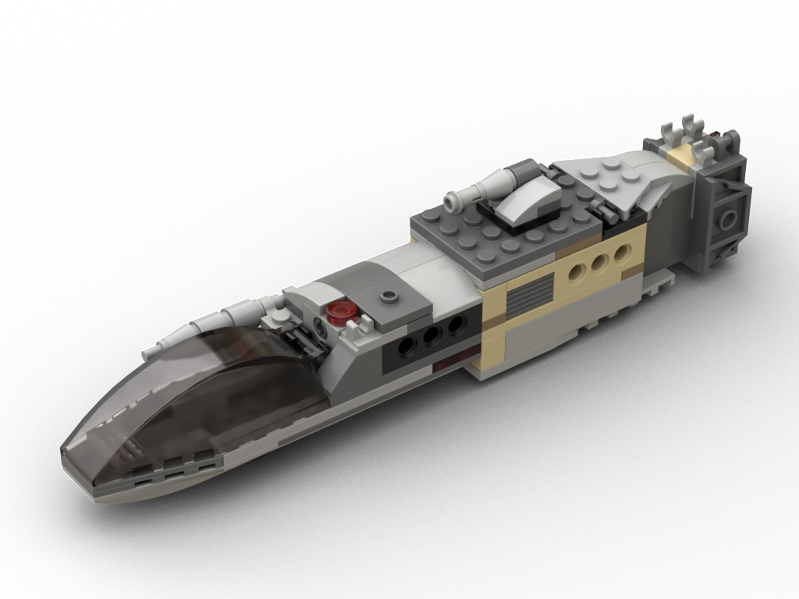
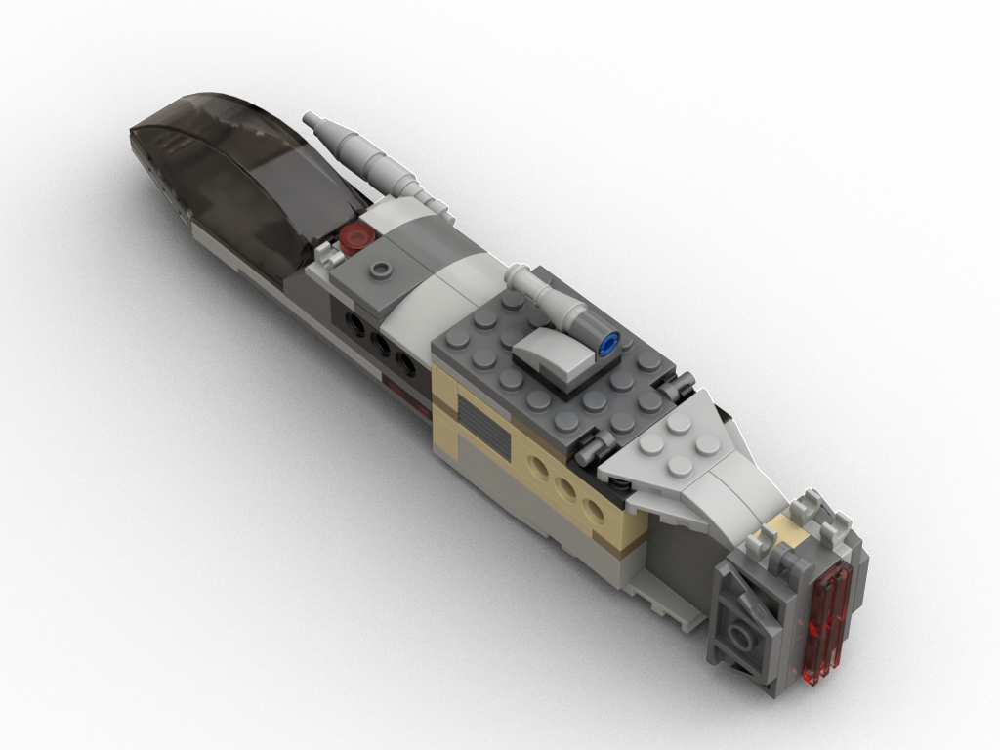
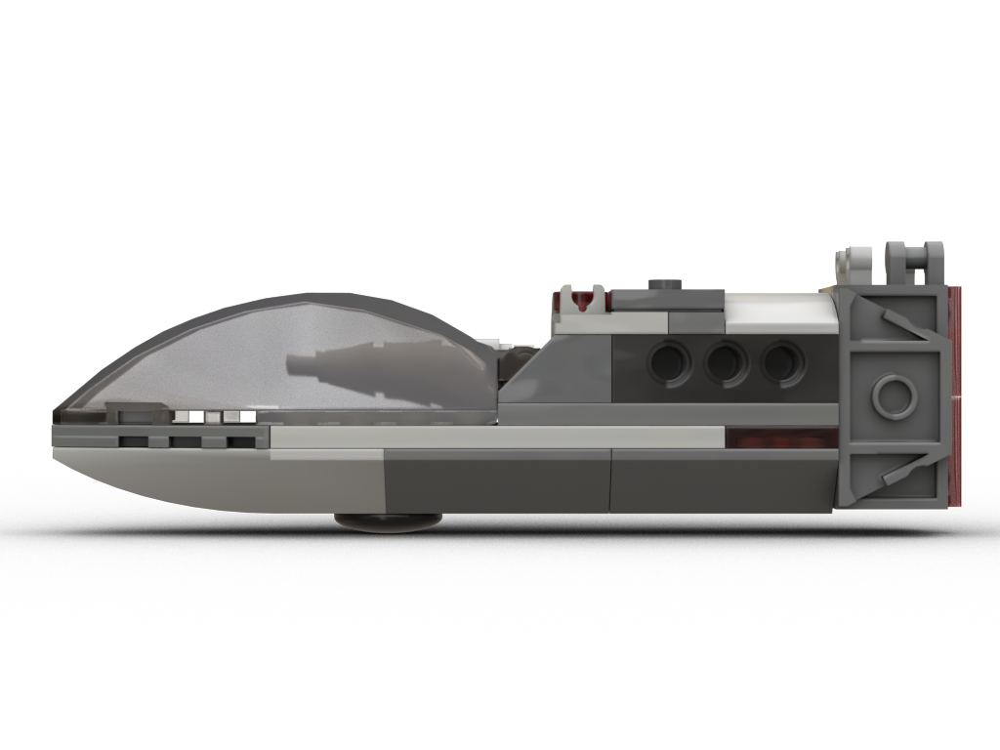
Features
- Small cockpit pod with minimal pilot space
- One cannon, a droid/light container docking port and one slot for minifigure gear
- The engine provides more minifigure gear storage options. Alternatively the cannon can also be mounted on the engine
- Cargo pod with turret and further connection points
- Compatible with the engines of the Wedge and UniPod
- The cockpit pod can be attached to the "Square Falcon"
The design shows some compromises made due to running out of suitable bricks due to having built the Mosquito, Wedge, UniPod before. It was originally intended to be the cockpit for the "Square Falcon".
- The part base are various Lego Star Wars sets
- Time needed to digitalize: ~40 minutes
- Dimensions (fully assembled with cargo pod): 21x4x5cm, 97g, 91 parts, 52 distinct parts
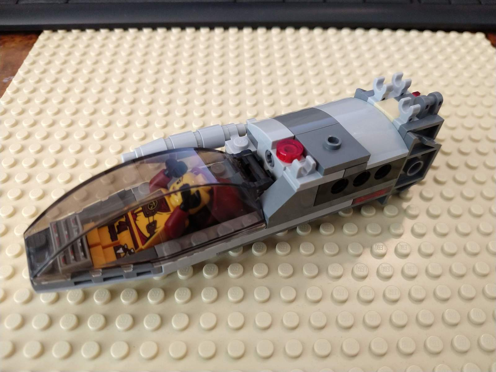
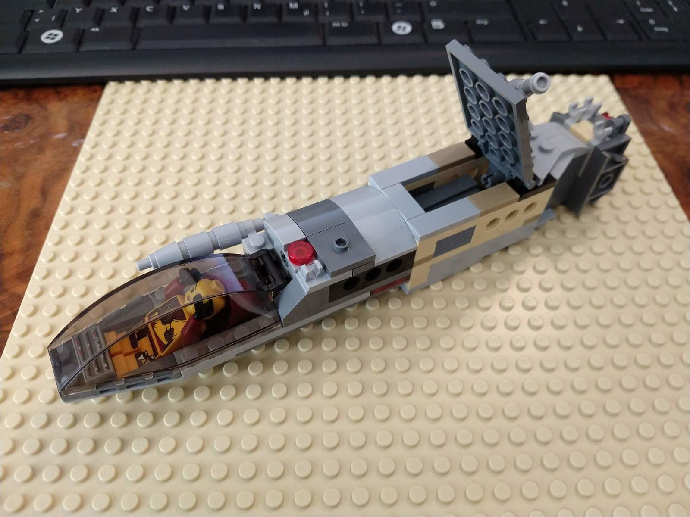
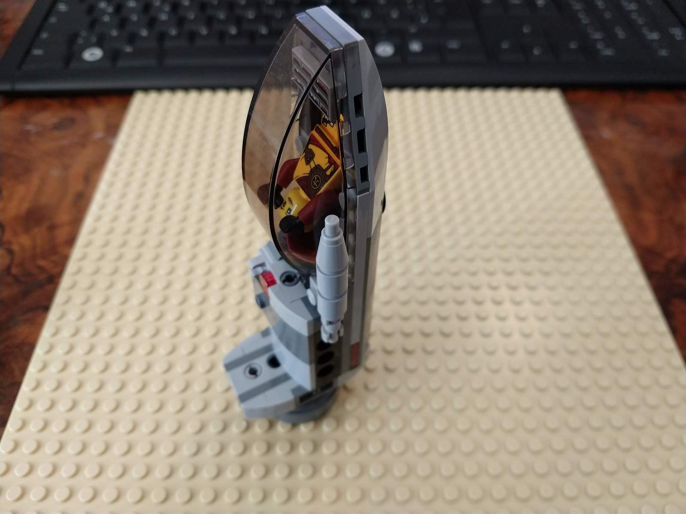
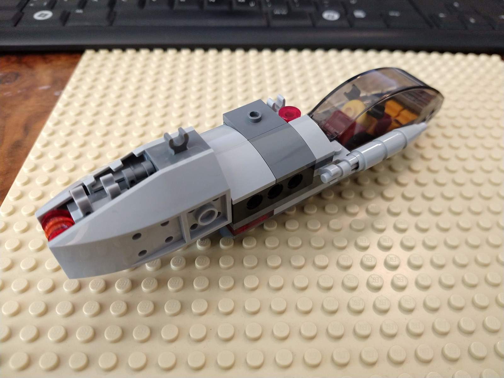
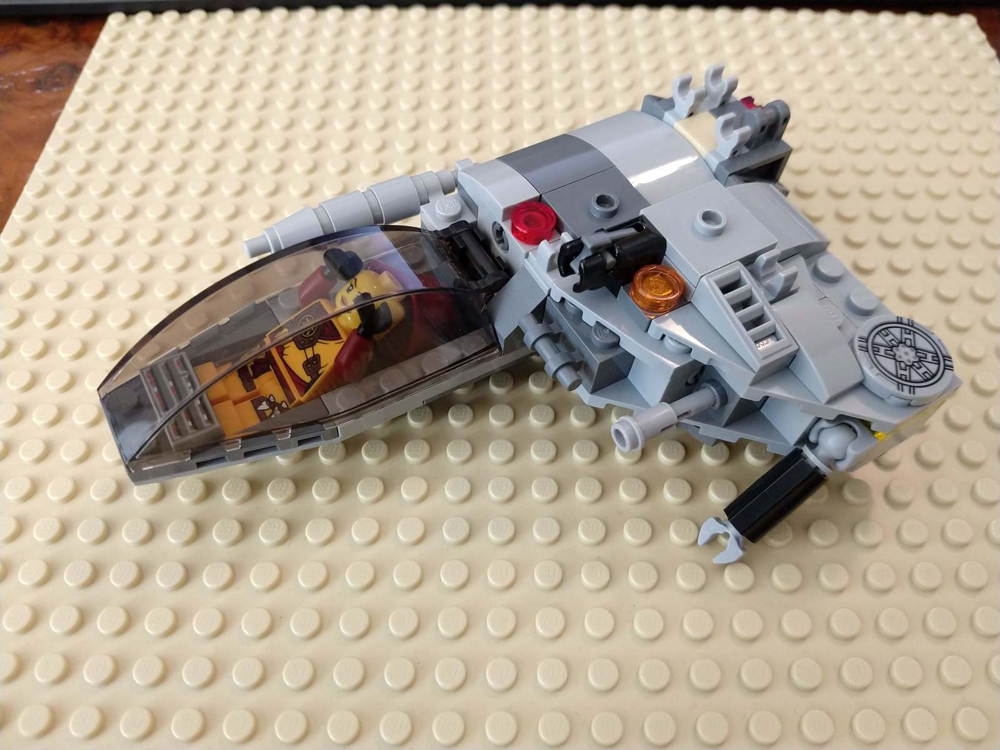
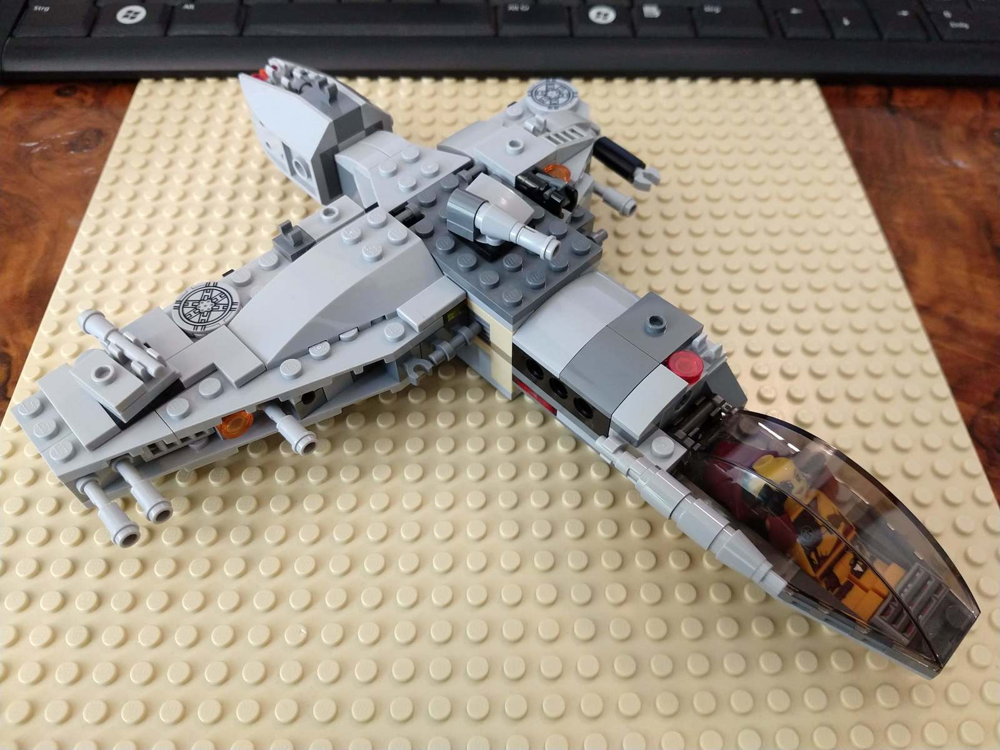
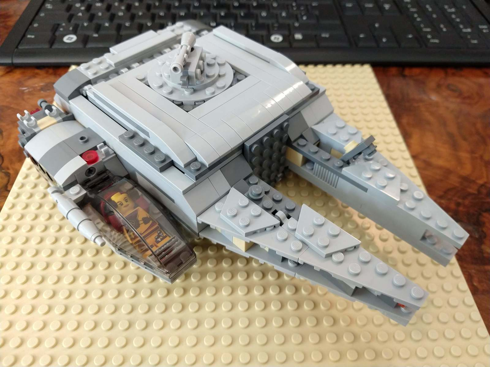
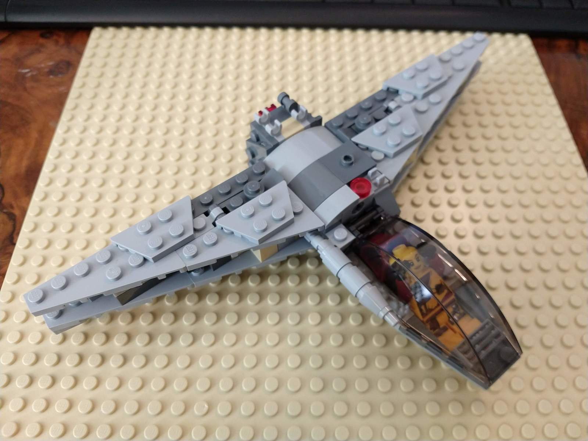